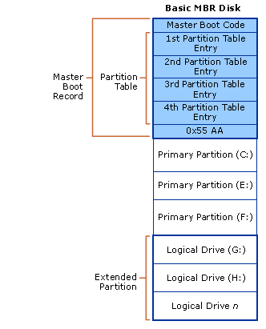
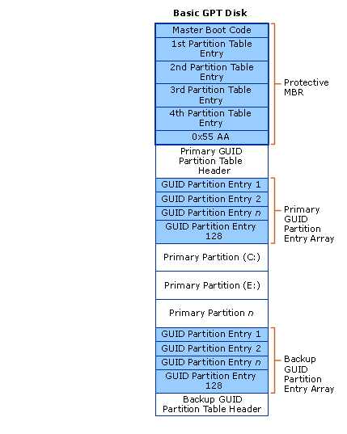

Before partitioning a drive or getting information about the partition layout of a drive, you must first understand the features and limitations of basic and dynamic disk storage types.
For the purposes of this topic, the term volume is used to refer to the concept of a disk partition formatted with a valid file system, most commonly NTFS, that is used by the Windows operating system to store files. A volume has a Win32 path name, can be enumerated by the FindFirstVolume and FindNextVolume functions, and usually has a drive letter assigned to it, such as C:. For more information about volumes and file systems, see File Systems.
In this topic:
There are two types of disks when referring to storage types in this context: basic disks and dynamic disks. Note that the storage types discussed here are not the same as physical disks or partition styles, which are related but separate concepts. For example, referring to a basic disk does not imply a particular partition style—the partition style used for the disk under discussion would also need to be specified. For a simplified description of how a basic disk storage type relates to a physical hard disk, see Disk Devices and Partitions.
Basic disks are the storage types most often used with Windows. The term basic disk refers to a disk that contains partitions, such as primary partitions and logical drives, and these in turn are usually formatted with a file system to become a volume for file storage. Basic disks provide a simple storage solution that can accommodate a useful array of changing storage requirement scenarios. Basic disks also support clustered disks, Institute of Electrical and Electronics Engineers (IEEE) 1394 disks, and universal serial bus (USB) removable drives. For backward compatibility, basic disks usually use the same Master Boot Record (MBR) partition style as the disks used by the Microsoft MS-DOS operating system and all versions of Windows but can also support GUID Partition Table (GPT) partitions on systems that support it. For more information about MBR and GPT partition styles, see the Partition Styles section.
You can add more space to existing primary partitions and logical drives by extending them into adjacent, contiguous unallocated space on the same disk. To extend a basic volume, it must be formatted with the NTFS file system. You can extend a logical drive within contiguous free space in the extended partition that contains it. If you extend a logical drive beyond the free space available in the extended partition, the extended partition grows to contain the logical drive as long as the extended partition is followed by contiguous unallocated space. For more information, see How Basic Disks and Volumes Work.
The following operations can be performed only on basic disks:
[!NOTE] For all usages except mirror boot volumes (using a mirror volume to host the operating system), dynamic disks are deprecated. For data that requires resiliency against drive failure, use Storage Spaces, a resilient storage virtualization solution. For more info, see Storage Spaces Overview.
Dynamic disks provide features that basic disks do not, such as the ability to create volumes that span multiple disks (spanned and striped volumes) and the ability to create fault-tolerant volumes (mirrored and RAID-5 volumes). Like basic disks, dynamic disks can use the MBR or GPT partition styles on systems that support both. All volumes on dynamic disks are known as dynamic volumes. Dynamic disks offer greater flexibility for volume management because they use a database to track information about dynamic volumes on the disk and about other dynamic disks in the computer. Because each dynamic disk in a computer stores a replica of the dynamic disk database, for example, a corrupted dynamic disk database can repair one dynamic disk by using the database on another dynamic disk. The location of the database is determined by the partition style of the disk. On MBR partitions, the database is contained in the last 1 megabyte (MB) of the disk. On GPT partitions, the database is contained in a 1-MB reserved (hidden) partition.
Dynamic disks are a separate form of volume management that allows volumes to have noncontiguous extents on one or more physical disks. Dynamic disks and volumes rely on the Logical Disk Manager (LDM) and Virtual Disk Service (VDS) and their associated features. These features enable you to perform tasks such as converting basic disks into dynamic disks, and creating fault-tolerant volumes. To encourage the use of dynamic disks, multi-partition volume support was removed from basic disks, and is now exclusively supported on dynamic disks.
The following operations can be performed only on dynamic disks:
Another difference between basic and dynamic disks is that dynamic disk volumes can be composed of a set of noncontiguous extents on one or multiple physical disks. By contrast, a volume on a basic disk consists of one set of contiguous extents on a single disk. Because of the location and size of the disk space needed by the LDM database, Windows cannot convert a basic disk to a dynamic disk unless there is at least 1 MB of unused space on the disk.
Regardless of whether the dynamic disks on a system use the MBR or GPT partition style, you can create up to 2,000 dynamic volumes on a system, although the recommended number of dynamic volumes is 32 or less. For details and other considerations about using dynamic disks and volumes, see Dynamic disks and volumes.
For more features of and usage scenarios for dynamic disks, see What Are Dynamic Disks and Volumes?.
The operations common to basic and dynamic disks are the following:
Unless specified otherwise, Windows initially partitions a drive as a basic disk by default. You must explicitly convert a basic disk to a dynamic disk. However, there are disk space considerations that must be accounted for before you attempt to do this.
Partition styles, also sometimes called partition schemes, is a term that refers to the particular underlying structure of the disk layout and how the partitioning is actually arranged, what the capabilities are, and also what the limitations are. To boot Windows, the BIOS implementations in x86-based and x64-based computers require a basic disk that must contain at least one master boot record (MBR) partition marked as active where information about the Windows operating system (but not necessarily the entire operating system installation) and where information about the partitions on the disk are stored. This information is placed in separate places, and these two places may be located in separate partitions or in a single partition. All other physical disk storage can be set up as various combinations of the two available partition styles, described in the following sections. For more information about other system types, see the TechNet topic on partition styles.
Dynamic disks follow slightly different usage scenarios, as previously outlined, and the way they utilize the two partition styles is affected by that usage. Because dynamic disks are not generally used to contain system boot volumes, this discussion is simplified to exclude special-case scenarios. For more detailed information about partition data block layouts, and basic or dynamic disk usage scenarios related to partition styles, see How Basic Disks and Volumes Work and How Dynamic Disks and Volumes Work.
All x86-based and x64-based computers running Windows can use the partition style known as master boot record (MBR). The MBR partition style contains a partition table that describes where the partitions are located on the disk. Because MBR is the only partition style available on x86-based computers prior to Windows Server 2003 with Service Pack 1 (SP1), you do not need to choose this style. It is used automatically.
You can create up to four partitions on a basic disk using the MBR partition scheme: either four primary partitions, or three primary and one extended. The extended partition can contain one or more logical drives. The following figure illustrates an example layout of three primary partitions and one extended partition on a basic disk using MBR. The extended partition contains four extended logical drives within it. The extended partition may or may not be located at the end of the disk, but it is always a single contiguous space for logical drives 1-n.

Each partition, whether primary or extended, can be formatted to be a Windows volume, with a one-to-one correlation of volume-to-partition. In other words, a single partition cannot contain more than a single volume. In this example, there would be a total of seven volumes available to Windows for file storage. An unformatted partition is not available for file storage in Windows.
The dynamic disk MBR layout looks very similar to the basic disk MBR layout, except that only one primary partition is allowed (referred to as the LDM partition), no extended partitioning is allowed, and there is a hidden partition at the end of the disk for the LDM database. For more information on the LDM, see the Dynamic Disks section.
Systems running Windows Server 2003 with SP1 and later can use a partition style known as the globally unique identifier (GUID) partition table (GPT) in addition to the MBR partition style. A basic disk using the GPT partition style can have up to 128 primary partitions, while dynamic disks will have a single LDM partition as with MBR partitioning. Because basic disks using GPT partitioning do not limit you to four partitions, you do not need to create extended partitions or logical drives.
The GPT partition style also has the following properties:
The GPT partitioning layout for a basic disk is illustrated in the following figure.

The protective MBR area exists on a GPT partition layout for backward compatibility with disk management utilities that operate on MBR. The GPT header defines the range of logical block addresses that are usable by partition entries. The GPT header also defines its location on the disk, its GUID, and a 32-bit cyclic redundancy check (CRC32) checksum that is used to verify the integrity of the GPT header. Each GUID partition entry begins with a partition type GUID. The 16-byte partition type GUID, which is similar to a System ID in the partition table of an MBR disk, identifies the type of data that the partition contains and identifies how the partition is used, for example if it is a basic disk or a dynamic disk. Note that each GUID partition entry has a backup copy.
Dynamic disk GPT partition layouts looks similar to this basic disk example, but as stated previously have only one LDM partition entry rather than 1-n primary partitions as allowed on basic disks. There is also a hidden LDM database partition with a corresponding GUID partition entry for it. For more information on the LDM, see the Dynamic Disks section.
There is no specific function to programmatically detect the type of disk a particular file or directory is located on. There is an indirect method.
Basic Disks and Volumes Technical Reference
Dynamic Disks and Volumes Technical Reference
Â
Â